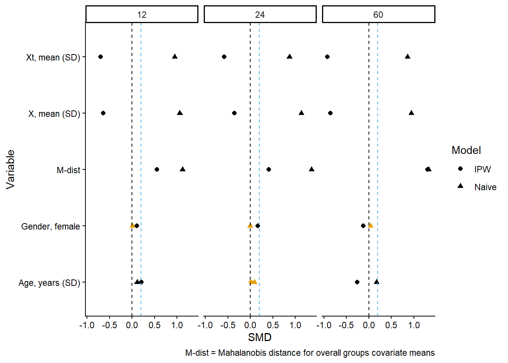

# Many packages can do this for you, I write out manually for transparency
d_cbase = dta_c_panel %>%
# Take one obs for the baseline column
dplyr::filter(time==1 & assign==1 & censor==0) %>%
summarize(N = prettyNum(n(), big.mark=','),
X = paste0(round(mean(X), 2), ' (', round(sd(X), 2), ')'),
X_t = paste0(round(mean(X_t), 2), ' (', round(sd(X_t), 2), ')'),
`Age, years (SD)` = paste0(floor(mean(age)), ' (', floor(sd(age)), ')'),
`Sex, % Female` = paste0(prettyNum(sum(female==1), big.mark = ','),
' (', round(mean(female)*100,1), ')')) %>%
t()
d_c0 = dta_c_panel %>%
# End of grace period
dplyr::filter(time==12 & assign==0 & censor==0) %>%
summarize(N = prettyNum(n(), big.mark=','),
X = paste0(round(mean(X), 2), ' (', round(sd(X), 2), ')'),
X_t = paste0(round(mean(X_t), 2), ' (', round(sd(X_t), 2), ')'),
`Age, years (SD)` = paste0(floor(mean(age)), ' (', floor(sd(age)), ')'),
`Gender, % Female` = paste0(prettyNum(sum(female==1), big.mark = ','),
' (', round(mean(female)*100,1), ')')) %>%
t()
d_c1 = dta_c_panel %>%
# End of grace period
dplyr::filter(time==12 & assign==1 & censor==0) %>%
summarize(N = prettyNum(n(), big.mark=','),
X = paste0(round(mean(X), 2), ' (', round(sd(X), 2), ')'),
X_t = paste0(round(mean(X_t), 2), ' (', round(sd(X_t), 2), ')'),
`Age, years (SD)` = paste0(floor(mean(age)), ' (', floor(sd(age)), ')'),
`Sex, % Female` = paste0(prettyNum(sum(female==1), big.mark = ','),
' (', round(mean(female)*100,1), ')')) %>%
t()
d_tab1 = bind_cols(Variables = c('N', 'X, mean (SD)', 'Xt, mean (SD)', 'Age, years (SD)', 'Sex, female'),
`Baseline` = d_cbase, `Assign=0` = d_c0, `Assign=1` = d_c1) Inference
Description of cohort, “Table 1”
In both randomized trials and observational studies comparing interventions/treatments there is typically a presentation of the overall cohort, or comparison of those receiving treatment versus alternatives. The table will present basic demographics and some additional characteristics of interest (confounders, important predictors/causes of outcome etc.). I generally do not present inferential statistics between groups in this table (i.e. no p-values or confidence intervals) but will provide a standardized mean difference.
Some special considerations are needed when presenting target trial emulations.
Cloning & Grace Period
The cloning presents an interesting problem for a “Table 1” because the groups are identical at baseline. Artificial censoring may change the distribution of covariates over time if censoring is correlated with these covariates. It probably makes sense for most projects using a clone-sensor-weight approach to present a “baseline” cohort column, and then columns describing the intervention groups at a key follow-up time point. The end of the grace period is a good standard choice. It makes sense to present the time-invariant covariates as well as time-varying covariates.
Assume a simple example where the design of the study includes a baseline period, “time zero” and two treatment strategies, with a grace period or interval where one strategy allows some time for treatment to occur.There being two main periods: 1) Baseline time zero, 2) End of the grace period.
Here is one approach:
- Present the baseline characteristics for everyone (prior to cloning) at time zero.
- Present the characteristics for both treatment groups at the end of the grace period.
This would lead to a “Table 1” with three columns.
Table 1
Many R packages will construct a “Table 1” for users. I manually code below for transparency.
| Variables | Baseline | Assign=0 | Assign=1 |
|---|---|---|---|
| N | 4,000 | 3,036 | 758 |
| X, mean (SD) | 0.05 (0.21) | 0.03 (0.18) | 0.11 (0.31) |
| Xt, mean (SD) | 0.02 (0.15) | 0.03 (0.18) | 0.03 (0.17) |
| Age, years (SD) | 75 (10) | 75 (9) | 75 (10) |
| Sex, female | 2,648 (66.2) | 2,009 (66.2) | 523 (69) |
Presentation of weighted differences
Most researchers would provide the naive differences between groups, and then present some adjusted difference. Most commonly the standardized mean differences (aSMD) or a P-value from a univariate test (not recommended).
So you could add one column for the SMD to the “Table 1”, but there are also other approaches such as reporting Mahalanobis distance.
Computation of distances
d_smd = dta_c_panel %>%
dplyr::filter(time==12 & censor==0) %>%
summarize(`X, mean (SD)` = (mean(X[assign==1]) - mean(X[assign==0])) / sd(X),
`Xt, mean (SD)` = (mean(X_t[assign==1]) - mean(X_t[assign==0])) / sd(X_t),
`Age, years (SD)` = (mean(age[assign==1]) - mean(age[assign==0])) / sd(age),
`Sex, female` = (mean(female[assign==1]) - mean(female[assign==0])) / sd(female)
) %>%
t() %>%
as_tibble(rownames = 'Variable') %>%
rename(`aSMD` = V1)
d_tab1 = left_join(d_tab1, d_smd, by=c('Variables' = 'Variable'))# Compute pooled covariance matrix
cov_pooled <- (var(dta_c_panel[dta_c_panel$assign==1, c('X', 'X_t', 'age', 'female')]) +
var(dta_c_panel[dta_c_panel$assign==0, c('X', 'X_t', 'age', 'female')])) / 2
# Compute Mahalanobis distance
mahal_dist <- mahalanobis(colMeans(dta_c_panel[dta_c_panel$assign==1,
c('X', 'X_t', 'age', 'female')]),
center = colMeans(dta_c_panel[dta_c_panel$assign==0,
c('X', 'X_t', 'age', 'female')]),
cov = cov_pooled)Table 1 with differences
| Variables | Baseline | Assign=0 | Assign=1 | aSMD |
|---|---|---|---|---|
| N | 4,000 | 3,036 | 758 | NA |
| X, mean (SD) | 0.05 (0.21) | 0.03 (0.18) | 0.11 (0.31) | 0.355 |
| Xt, mean (SD) | 0.02 (0.15) | 0.03 (0.18) | 0.03 (0.17) | -0.029 |
| Age, years (SD) | 75 (10) | 75 (9) | 75 (10) | 0.038 |
| Sex, female | 2,648 (66.2) | 2,009 (66.2) | 523 (69) | 0.060 |
Note: Mahalanobis distance between groups, Naive: 0.042
Table 1 with weighted differences
Note
See Estimators for full description of weight estimation
| Variables | Baseline | Assign=0 | Assign=1 | aSMD | IPW aSMD |
|---|---|---|---|---|---|
| N | 4,000 | 3,036 | 758 | NA | NA |
| X, mean (SD) | 0.05 (0.21) | 0.03 (0.18) | 0.11 (0.31) | 0.355 | -0.135 |
| Xt, mean (SD) | 0.02 (0.15) | 0.03 (0.18) | 0.03 (0.17) | -0.029 | -0.171 |
| Age, years (SD) | 75 (10) | 75 (9) | 75 (10) | 0.038 | 0.165 |
| Sex, female | 2,648 (66.2) | 2,009 (66.2) | 523 (69) | 0.060 | 0.399 |
Note. Mahalanobis distance between groups, Naive: 0.042, IPW: 0.241
Figure of differences across time
These differences can also be presented in a modified “Love” plot, with panels for each period of follow-up. It doesn’t really make sense to do one at baseline because the differences will be small/none. But we can pick a few follow-up periods to evaluate:
# aSMD Figure ----
i_SMD_grps = c(12, 24, 60)
d_time = dta_c_panel %>%
dplyr::filter(time %in% c(i_SMD_grps) & censor==0) %>%
nest(.by = time)
d_time$SMD_naive = map(d_time$data, ~f_cpt_dist(.))
d_time$SMD_ipw = map(d_time$data, ~f_cpt_dist_wt(.))
gg_bal = select(d_time, time, SMD_naive, SMD_ipw) %>%
unnest() %>%
select(-Variable1) %>%
rename(`Naive` = SMD,
`IPW` = SMD1) %>%
pivot_longer(cols = c('Naive', 'IPW'),
names_to = 'Model', values_to = 'SMD') %>%
mutate(flag = if_else(abs(SMD)>0.1, cbbPalette[1], cbbPalette[2])) %>%
ggplot(., aes(y = Variable, x = SMD, group = Model)) +
geom_point(aes(shape=Model, color = flag), size=1.8) +
geom_vline(xintercept = 0, linetype=2) +
geom_vline(xintercept = 0.2, linetype=2, color=cbbPalette[3]) +
scale_color_identity() +
facet_grid(cols = vars(time)) +
theme_classic() +
labs(x = 'SMD', y = 'Variable',
caption = 'M-dist = Mahalanobis distance for overall groups covariate means')
gg_bal

Note
You can see the weighted between group differences are significantly reduced by the unstabilized IPW. However, caution is advised in interpretation of the differences. If the treatment/exposure of interest has a causal relationship with the outcome (or some other censoring mechanism besides the artificial censoring the weights account for), then you might expect there to be differences between groups. This is because the groups are conditional on remaining alive, uncensored at each time-point, which may occur after treatment/exposure. In effect you are conditioning on a collider (outcome).
Uncertainty estimates
Several steps in the analysis make the assumptions of conventional standard errors invalid. The use of cloning or repeated use of persons across sequential target trial dates complicates the statistical properties of the estimand (due to correlated data), additionally the uncertainty in estimation of probability weights must be accounted for.
Currently, most researchers are using bootstrapping to obtain confidence limits via percentile method. It is critical that: 1. The bootstrapping step occur prior to sequential repeated sampling, cloning or estimation of weights 2. The bootstrap sampling with replacement must be at the cluster-level (person).
Also consider, bootstrapping may fail to produce valid estimates in cases of matching procedures, or penalized regression procedures.[Camponovo (2015)](Abadie and Imbens 2008) Other bootstrapping failures may arise due to limited sample size or values on the boundary of a parameter space.
Bootstrapping
Note
A Poisson bootstrap procedure is used here, see:Additional Topics for some notes on this.
Bootstrapping is fairly straightforward, but for specific projects the procedure may need to be modified because of computing resources. Here we execute the entire procedure in one step, but it may make sense for your project to generate a single bootstrapped data first, then run each estimation step sequentially and store the results in a file before executing the next one. This would make sense if 1) one bootstrap takes a very long time, 2) there is a decent chance that the procedure may be interrupted (like a cloud server cuts off user etc.).
The function generates a frequency weight from a random Poisson distribution with mean=1. This weight is used through the IPW estimation and outcome model steps.
boot_ipw = function(x, point=F) {
setDT(x)
1 x[, freqwt:=rpois(n=1, lambda=1), by = factor(id)]
2 if (point) x[, freqwt:=1]
# Numerator (margin probability)
d_glm_wt = glm(treat ~ poly(time, 2, raw=T),
data=x[x$assign==0, ], family=binomial(),
3 weights = freqwt)
x$pr_censnum = predict(d_glm_wt, newdata = x, type='response')
# Denominator
d_glm_wt = glm(treat ~ poly(time, 2, raw=T) + X + X_t,
data=x[x$assign==0, ], family=binomial(),
weights = freqwt)
x$pr_censdenom = predict(d_glm_wt, newdata = x, type='response')
x[, ipw := fcase(
assign==0 & censor==0, 1 / (1-pr_censdenom),
assign==0 & censor==1, 0,
assign==1 & time < 12, 1,
assign==1 & time == 12 & t_treat < 12, 1,
assign==1 & time == 12 & t_treat ==12 & censor==0, 1 / (pr_censdenom),
assign==1 & time == 12 & t_treat >12 & event==0, 0,
assign==1 & time == 12 & t_treat >12 & event==1, 1,
assign==1 & time > 12, 1
)]
x[, marg_ipw := fcase(
assign==0 & censor==0, (1-pr_censnum) / (1-pr_censdenom),
assign==1 & time == 12 & t_treat ==12 & censor==0, pr_censnum / (pr_censdenom),
default = ipw
)]
x[, `:=`(ipw = cumprod(ipw),
marg_ipw = cumprod(marg_ipw)),
by=list(id, assign)]
d_glm_pe_1 = glm(event==0 ~ poly(time, 2, raw=T),
data=x[x$assign==1, ],
4 family=binomial(), weights = freqwt*ipw)
d_glm_pe_0 = glm(event==0 ~ poly(time, 2, raw=T),
data=x[x$assign==0, ],
family=binomial(), weights = freqwt*ipw)
x$pr_1 = predict(d_glm_pe_1, newdata = x,
type='response')
x$pr_0 = predict(d_glm_pe_0, newdata = x,
type='response')
x[, `:=`(pr_cum_1 = cumprod(pr_1)), by=list(id, assign)]
x[, `:=`(pr_cum_0 = cumprod(pr_0)), by=list(id, assign)]
d_res = x %>%
group_by(time) %>%
5 summarize(pr_ev_1 = weighted.mean(1-pr_cum_1, freqwt),
pr_ev_0 = weighted.mean(1-pr_cum_0, freqwt),
.groups = 'drop') %>%
ungroup %>%
mutate(cid = pr_ev_1 - pr_ev_0,
cir = pr_ev_1 / pr_ev_0)
return(d_res)
}- 1
- The random Poisson draw is representing the number of times that observation would have appeared in dataset resampled with equal size and replacement (i.e. on average would appear 1 time).
- 2
- This option allows estimating the point estimate (not bootstrapped).
- 3
-
Note the
freqwtused in theglm()procedure. - 4
-
Note the
freqwt*ipwused in theglm()procedure. - 5
-
Note the use of
weighted.mean()andfreqwt.
The function can be run iteratively, with replicate() or purrr/furrr or many other options.
library(furrr)
boots = 20
1plan(multisession, workers = 10)
2d_pe = boot_ipw(dta_c_panel, point=T)
d_boot = future_map(1:boots,
function(x) boot_ipw(dta_c_panel),
3 .options = furrr_options(seed=T))- 1
- Set 10 CPU workers for parallel computation
- 2
- Obtain point estimates first (no bootstrapping)
- 3
-
Run bootstraps in parallel, note the
furrr_options(seed=T)is important because of the RNG functions and is needed to ensure reproducibility and some funny quirks of generating random numbers in parallel. Seefurrrfor explanation.
After the bootstraps, summarizing is straightforward as well:
1lci_q = 0.025
uci_q = 0.975
d_summ = d_boot %>%
bind_rows(., .id = 'boot') %>%
group_by(time) %>%
summarize(n_boots = n(),
pr_ev_1_lci = quantile(pr_ev_1, lci_q),
pr_ev_1_uci = quantile(pr_ev_1, uci_q),
pr_ev_0_lci = quantile(pr_ev_0, lci_q),
pr_ev_0_uci = quantile(pr_ev_0, uci_q),
cid_lci = quantile(cid, lci_q),
cid_uci = quantile(cid, uci_q),
cir_lci = quantile(cir, lci_q),
cir_uci = quantile(cir, uci_q)
) %>%
2 inner_join(., d_pe, by='time')- 1
- percentile intervals are specified at the conventional points (95%). However any of the typical bootstrapped confidence procedures can be done at this point.
- 2
- Joining the computed intervals back with point estimates.
| time | Assign=1 | Assign=0 | CID | RR |
|---|---|---|---|---|
| 12.00 | 0.19 (0.04, 0.42) | 0.14 (0.12, 0.17) | 0.05 (-0.10, 0.28) | 1.32 (0.27, 2.91) |
| 24.00 | 0.32 (0.10, 0.55) | 0.25 (0.23, 0.29) | 0.06 (-0.15, 0.29) | 1.25 (0.39, 2.18) |
| 60.00 | 0.45 (0.22, 0.58) | 0.48 (0.44, 0.51) | -0.02 (-0.23, 0.12) | 0.95 (0.49, 1.26) |
Influence statistics
Under development…
References
Abadie, Alberto, and Guido W. Imbens. 2008. “On the Failure of the Bootstrap for Matching Estimators.” Econometrica 76 (6): 1537–57. https://doi.org/https://doi.org/10.3982/ECTA6474.
Camponovo, L. 2015. “On the Validity of the Pairs Bootstrap for Lasso Estimators.” Biometrika 102 (4): 981–87. https://doi.org/10.1093/biomet/asv039.